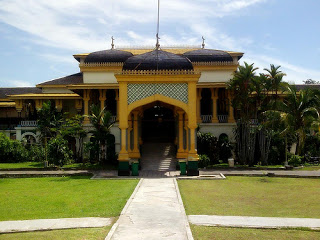
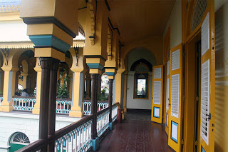
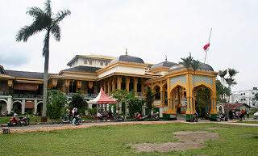
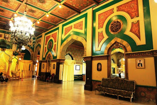

Istana Maimun yang terletak di Kota Medan ini adalah salah satu dari ikon kota Medan, Sumatera Utara, tepatnya terletak di kelurahan Sukaraja, kecamatan Medan Maimun.

Istana Maimun ini didesain atau dirancang oleh arsitek dari Italia yang kemudian dibangun oleh Sultan Deli, Makmun Al Rasyid Perkasa Alamsyah pada taun 1888 silam, Istana Maimun memiliki luas sebesar 2.772 meter persegi dengan jumlah ruangan sebanyak 30 kamar.

Istana Maimun menjadi salah satu tempat tujuan wisata yang sudah cukup populer, bukan hanya karena usianya yang sudah tua, melainkan desain interiornya yang sangat unik dapat mengundang para wisatawan berkunjung ke Istana Maimun ini, dengan memadukan unsur-unsur warisan kebudayaan dari Melayu dan gaya Islam, Spanyol, India dan Italia. namun sayang sekali sekarang keadaanya kurang begitu terurus. Jika kita sedang melewati tempat ini pada waktu sore hari, kita dapat melihat anak-anak bermain sepak bola di halaman istana ini.

Istana Maimun tepatnya terletak di Jl. Brigjen Katamso Kota Medan sekitar 10 km dari bandara, wisata Istana Maimun merupakan sebuah peninggalan dari Sultan Kerajaan Deli Sultan Makmun Al Rasyid Perkasa Alamsyah. Bagunan ini terdiri dari 2 lantai dengan memiliki 3 bagian bangunan induk, sayap kiri dan sayap kanan dan dipengaruhi budaya Eropa yang cukup kental.

Istana Maimun
Jalan Brigjen Katamso